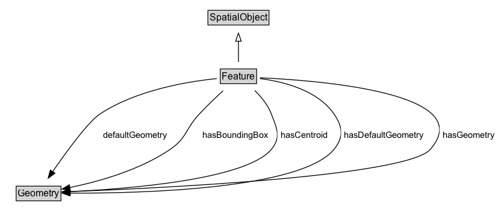

Feature¶
A discrete spatial phenomenon in a universe of discourse.
NOTE: A Feature represents a uniquely identifiable phenomenon, for example a river or an apple. While such phenomena (and therefore the Features used to represent them) are bounded, their boundaries may be crisp (e.g., the declared boundaries of a state), vague (e.g., the delineation of a valley versus its neighboring mountains), and change with time (e.g., a storm front). While discrete in nature, Features may be created from continuous observations, such as an isochrone that determines the region that can be reached by ambulance within 5 minutes.
Diagram¶

Formalization for Feature¶
| Property | Constraint |
|---|---|
| defaultGeometry | only Geometry |
| hasBoundingBox | only Geometry |
| hasCentroid | only Geometry |
| hasDefaultGeometry | only Geometry |
| hasGeometry | only Geometry |
| disjointWith | Geometry |
| subClassOf | SpatialObject |
Used by classes¶
| Class | Property |
|---|---|
| Feature Collection (rdfs) | rdfs:member |